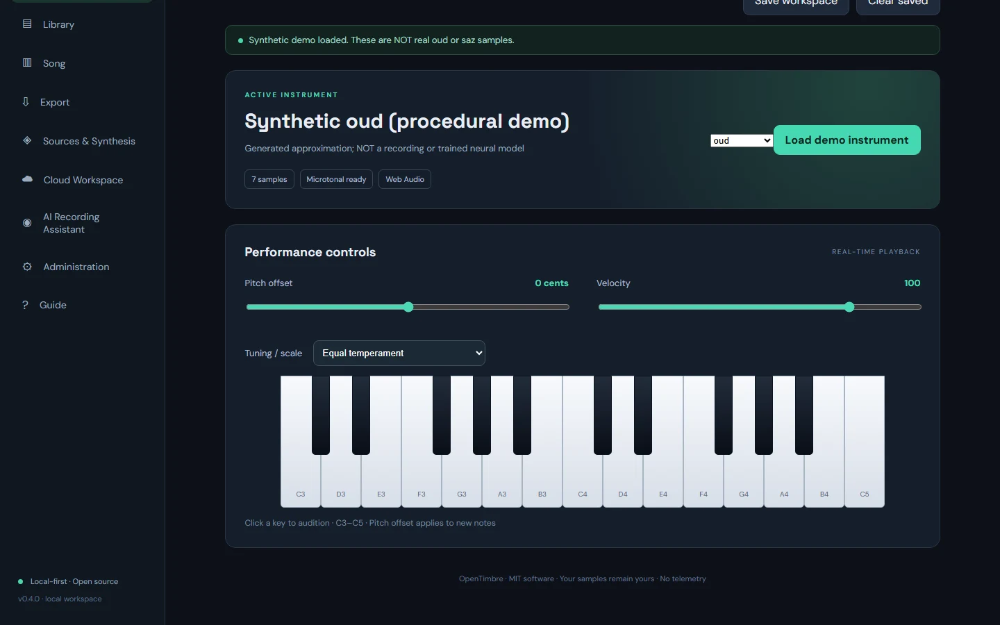
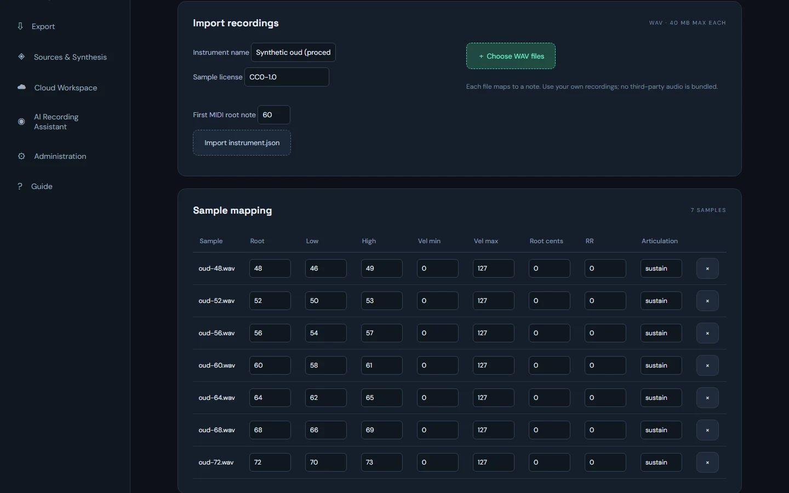
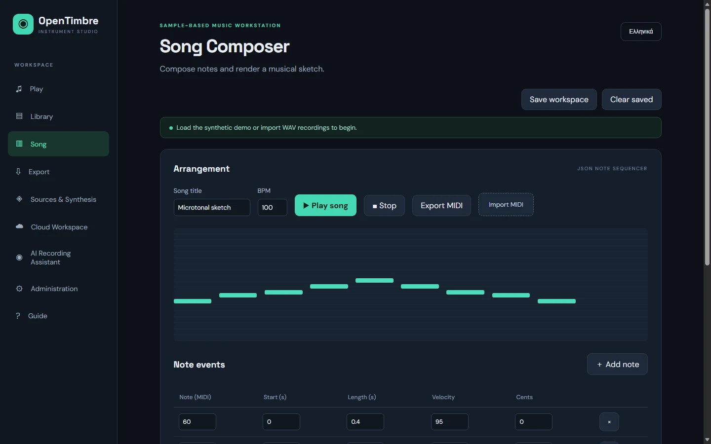
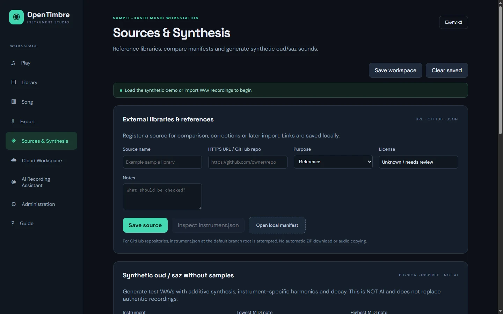
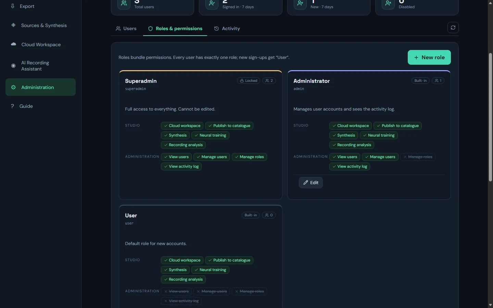

Sample mapping
Import WAVs and map each one to a root note, key range, velocity layer, round-robin slot and articulation.
OpenTimbre is a free, local-first studio for turning your own instrument recordings into playable, microtonal instruments. Map samples, play them, compose with them and export them, without sending your audio anywhere.

Why OpenTimbre
Maqam, dromos and many folk traditions use intervals that a standard piano grid can't play. Instruments like the oud, saz, tzouras and tambouras deserve tools that respect their tuning, and their players deserve to own their sound.
OpenTimbre lets you record an instrument once, map every sample to its notes and velocities, and then play and compose with cent-level precision. Everything runs in your browser by default. The optional backend adds a private cloud workspace, accounts with roles, and an experimental neural instrument trainer.
Try it · Web Audio
Play the keys (or type A–K), then bend every note with the cents slider. This little synth is a demo; the real studio plays your recordings.
What's inside
Import WAVs and map each one to a root note, key range, velocity layer, round-robin slot and articulation.
Per-note and per-sample cents, recorded root cents and tuning presets, so quarter tones are first-class.
A JSON note sequencer with a piano roll, MIDI import and export, and offline stereo WAV rendering.
Canonical instrument.json, SFZ mappings for other samplers, song JSON and rendered audio.
Train a small harmonic model on your own linked recordings. It's an honest, trainable baseline, not a magic oud.
An optional private cloud workspace, with accounts, custom roles and permissions, and an audit log.
A bilingual interface and detailed manuals in both languages, built into the app.
Your audio stays in your browser until you choose to upload it. No telemetry and no third-party samples bundled.
React + TypeScript, plain Web Audio, and FastAPI with SQLite. Small, readable and easy to extend.
A quick tour
Drop in WAV files, set root notes, ranges and velocity layers, and fine-tune the recorded pitch in cents.
Audition with the on-screen keyboard, choose a tuning preset and bend notes in real time.
Sketch an arrangement with per-note microtones, then export it as MIDI, JSON or a rendered WAV.
Generate clearly labelled procedural test tones, compare instrument manifests and keep track of sources.
Host it for a group, with accounts, custom roles and permissions enforced by the server.




The bundled instruments are procedurally generated demos, not real oud or saz recordings, and the app says so on screen. The neural trainer is a small baseline, not a pretrained model. Real instruments come from real players, and that's where you come in.
Get started
You need Node.js 22+. For accounts, the cloud workspace and neural training, add Python 3.10+ or use Docker.
docker compose up --build for the full stackscripts/dev.py setupJoin the community
OpenTimbre is young, and every contribution shapes it. You don't have to write code to make a difference.
Share openly licensed recordings of the oud, saz, tzouras, bouzouki, kanun, ney… so everyone can play them.
Propose a sample pack →DSP, React UI, the SFZ exporter, the Python backend, tests. Pick something you care about and open a pull request.
Read the contributing guide →Try it with your instrument and your tuning. Tell us what sounds wrong, what breaks and what's missing.
Open an issue →Improve the English and Greek manuals, or bring OpenTimbre to Turkish, Arabic, Persian and more.
Read the docs →